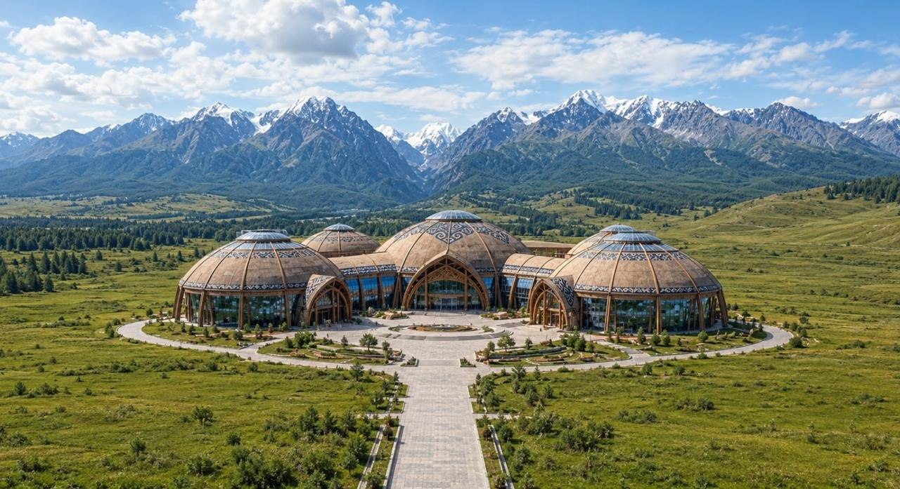

Қысқы маусым
Қора шатқалы
Нысандар (басып, ұшып барыңыз)
Жетісу өңірінде мультифункционалды спорттық-рекреациялық туристік кластерін құрудың экономикалық-математикалық моделі
Жарқыраған порталды басыңыз немесе оған жақындаңыз — Қора шатқалына өтесіз.
Кластердің туристік ағымы, инвестиция құрылымы және дисконтталған ақша ағыны (NPV) моделі. Барлық есептеулер ғылыми жобадағы бастапқы деректер негізінде; жүгірткілерді жылжытып, модельді интерактивті түрде тексеруге болады.
Ғылыми жобаға сәйкес: 500 млн ₸ — жеке инвесторлардың қаражаты, 250 млн ₸ — «Бизнестің жол картасы» мемлекеттік бағдарламасы аясында инженерлік-коммуникациялық желілерді (жол, жарық, су) жүргізуге бөлінетін қайтарымсыз субсидиялар мен инфрақұрылымдық қолдау.
Төмендегі шығын баптары бойынша бөлу — модельдік (болжамды) құрылым: жобада тек 500/250 бөлінісі көрсетілген, баптар оны нысандар бойынша нақтылау үшін берілген.
| Трасса / нысан | Ұзындығы | Биіктік айырмашылығы | Еңістігі | Қиындық деңгейі (FIS) |
|---|---|---|---|---|
| Кәсіпқойлар жолы | 6000 м | 1200 м | 30°–35° | Жоғары (қара, қызыл) |
| Әуесқойлар жолы | 3000 м | 450 м | 12°–15° | Орташа/төмен (көк, жасыл) |
| Балалар беткейі | 300 м | 40 м | 5°–8° | Оқу-жаттығу (тюбинг, шана) |
| Аспалы гондола жолы | 15 км | 1600 м (тік өрлеу) | — | Инженерлік-коммуникациялық белдеу |
Кластер құрылымы: база аумағы — 8 га; аспалы жол — 15 км; орташа биіктігі — 1800–3200 м, абс. биіктігі — 3500 м; сырғанау аумағы — 1000 га; жалпы демалу аумағы — 2000 га (орман ресурсын қосқанда).

XXI ғасырдағы жаһандану мен урбанизация процестері адамзат қоғамының өмір сүру ырғағын жеделдетіп, созылмалы шаршау мен стресстік факторлардың артуына алып келді. Әлемдік экономикада спорттық-сауықтыру және экологиялық туризмге сұраныс басым бағытқа айналуда. Текелі қаласы мен Қора шатқалы геоморфологиялық құрылымы, климаттық ерекшеліктері және гидрографиялық торы жағынан Орталық Азиядағы ірі мультифункционалды туристік кластерлердің біріне айналуға толық әлеуеті бар аумақ. Бұл ресурстарды ғылыми негізделген экономикалық-математикалық модельдеу арқылы игеру — экологиялық тепе-теңдікті сақтай отырып, моноқала экономикасын әртараптандырудың жолы.
Жетісу облысы Текелі қаласы мен Қора шатқалының табиғи-рекреациялық, ландшафтық және инженерлік-коммуникациялық әлеуетін кешенді түрде бағалау және заманауи экономикалық-математикалық модельдеу әдістерін қолдана отырып, «Текелілік-Қора жауһары» мультифункционалды спорттық-рекреациялық туристік кластерін құрудың ғылыми-тәжірибелік тұғырнамасын жасау.
Егер Жетісу Алатауының бірегей ландшафтық белдеулерінде орналасқан Қора шатқалының табиғи ресурстары мен Текелі моноқаласының дайын инфрақұрылымы (жол, жақын маңдағы СЭС-тер, логистикалық осьтер) біріктіріліп, «Бизнестің жол картасы» бағдарламасы аясында инвестиция тартылатын болса, онда «Текелілік-Қора жауһары» кластері қысқы және жазғы маусымда жылына 350 мыңнан астам туристі қабылдауға қабілетті, өзін-өзі 6–7 жылда толық ақтайтын және өңірлік өнімнің өсімін қамтамасыз ететін тұрақты экономикалық драйверге айналады.
Жетісу облысы Текелі аймағы мен Қора шатқалының туристік-рекреациялық жүйесі, жергілікті туризмді дамытудың болашағы бар саяхат маршруттары және өңірлік инфрақұрылым нысандары.
Өлкетану, физикалық және экономикалық география, туризм индустриясын ұйымдастыру, экономикалық-математикалық модельдеу және болжау әдістері.
Алғаш рет Текелі аймағы мен Қора шатқалының рекреациялық сыйымдылығы тек сипаттамалық тұрғыда емес, нақты математикалық формулалар мен дисконтталған ақша ағындарының (NPV) модельдері арқылы негізделді. Қысқы және жазғы туризм түрлерін синергиялық байланыста дамытудың мультифункционалды кластерлік матрицасы әзірленді.
Есептеулер, қаржылық модельдер мен маршруттық тактикалық схемалар Жетісу облысының туризм басқармасы мен Текелі қаласының әкімдігі тарапынан өңірді дамытудың стратегиялық жоспарларында қолданылуы мүмкін. Жұмыс «Бизнестің жол картасы» және мемлекеттік-жекеменшік серіктестік (МЖС) аясында инвесторларға ұсынуға дайын бизнес-жобалық стартап ретінде тәжірибелік құндылыққа ие.
Нысан карточкаларындағы нақты фотолар — мысал ретінде, Wikimedia Commons ашық лицензиясымен.
Қазақстан Республикасы Оқу-ағарту министрлігі · «Дарын» республикалық ғылыми-практикалық орталығы · Алматы қаласы білім басқармасы · Алматы, 2026